Unless noted otherwise, every result above uses trans = "no-transpose". trans = "transpose" reads A with a cross-thread lda-strided mirror pattern instead of a coalesced one, and the gap grows with n — collapsed below by default, expand a trans value to see its table and chart.
trans.ssyrk.c — CUDA / cuBLAS trans-sweep reference script
Uplo sweep
Unless noted otherwise, every result above uses uplo = "lower". Real workgroups dispatch in increasing index order, so uplo = "upper" front-loads the heaviest rows first (worse — long-running heavy workgroups have nothing to overlap with) while lower back-loads them (better — light rows clear fast, the heavy tail gets full GPU to itself) — collapsed below by default, expand a uplo value to see its table and chart.
uplo.ssyrk.c — CUDA / cuBLAS uplo-sweep reference script
Lda sweep
Unless noted otherwise, every result above uses a tight lda (no padding). Padding the row stride only matters for trans = "transpose" here (swept at both trans values below so that's visible in the data, not just claimed). Collapsed below by default — expand a trans value, then a pad, to see its table and chart.
lda.ssyrk.c — CUDA / cuBLAS lda-sweep reference script
alpha sweep
alpha is a plain multiplier here: the kernel applies it unconditionally, with no branch for any particular value. A flat sweep is therefore the expected result and is recorded as a measured null. Levels include 0, 1 and a denormal-producing 1e-38 because those are the values a shader could special-case if it ever grew a branch — and strsm is the routine where one does.
alpha.ssyrk.c — CUDA / cuBLAS alpha-sweep reference script
beta sweep
beta scales the existing y/C before accumulation. Reference BLAS is permitted to skip reading that operand entirely when beta is 0, so unlike alpha this sweep has a mechanism to be non-flat — a step at 0 means the shortcut is taken, and its size is what it saves.
beta.ssyrk.c — CUDA / cuBLAS beta-sweep reference script
layout sweep
Column-major swaps the effective m/n and flips the transpose flag internally, changing which axis is contiguous and therefore how the matrix reads coalesce. wgblas-only: cuBLAS is column-major and has no layout argument, so there is no reference curve to compare against.
Padding on the output matrix. C is written rather than streamed, so this measures write coalescing rather than read bandwidth — the row byte-stride is ldc*4, and a pad that moves it off the 128-byte boundary is what would show up here.
Benchmark results for ssyrk on Nvidia Geforce Gtx 1650.
Nvidia Geforce Gtx 1650 — wgblas vs cuBLAS
See also
Transpose sweep
Unless noted otherwise, every result above uses
trans = "no-transpose".trans = "transpose"reads A with a cross-threadlda-strided mirror pattern instead of a coalesced one, and the gap grows withn— collapsed below by default, expand atransvalue to see its table and chart.Nvidia Geforce Gtx 1650 — trans = no-transpose
Nvidia Geforce Gtx 1650 — trans = transpose
See also:
Uplo sweep
Unless noted otherwise, every result above uses
uplo = "lower". Real workgroups dispatch in increasing index order, souplo = "upper"front-loads the heaviest rows first (worse — long-running heavy workgroups have nothing to overlap with) whilelowerback-loads them (better — light rows clear fast, the heavy tail gets full GPU to itself) — collapsed below by default, expand auplovalue to see its table and chart.Nvidia Geforce Gtx 1650 — uplo = lower
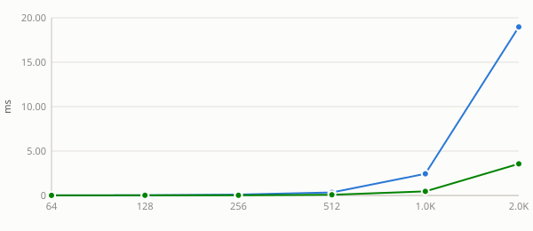
Nvidia Geforce Gtx 1650 — uplo = upper
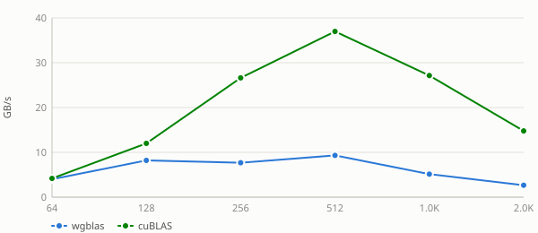
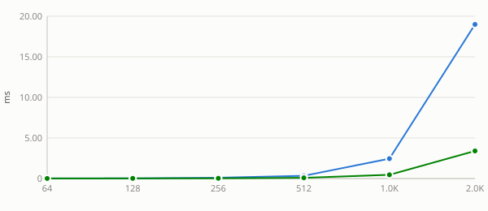
See also:
Lda sweep
Unless noted otherwise, every result above uses a tight
lda(no padding). Padding the row stride only matters fortrans = "transpose"here (swept at bothtransvalues below so that's visible in the data, not just claimed). Collapsed below by default — expand atransvalue, then apad, to see its table and chart.Nvidia Geforce Gtx 1650 — trans = no-transpose (6 pads)
pad = 0
pad = 1
pad = 8
pad = 16
pad = 32
pad = 64
Nvidia Geforce Gtx 1650 — trans = transpose (6 pads)
pad = 0
pad = 1
pad = 8
pad = 16
pad = 32
pad = 64
See also:
alpha sweep
alphais a plain multiplier here: the kernel applies it unconditionally, with no branch for any particular value. A flat sweep is therefore the expected result and is recorded as a measured null. Levels include0,1and a denormal-producing1e-38because those are the values a shader could special-case if it ever grew a branch — andstrsmis the routine where one does.Nvidia Geforce Gtx 1650 — alpha = -3.75
Nvidia Geforce Gtx 1650 — alpha = 0
Nvidia Geforce Gtx 1650 — alpha = 1e-38
Nvidia Geforce Gtx 1650 — alpha = 1
Nvidia Geforce Gtx 1650 — alpha = 2.5
See also:
beta sweep
betascales the existingy/Cbefore accumulation. Reference BLAS is permitted to skip reading that operand entirely whenbetais 0, so unlikealphathis sweep has a mechanism to be non-flat — a step at 0 means the shortcut is taken, and its size is what it saves.Nvidia Geforce Gtx 1650 — beta = -3.75
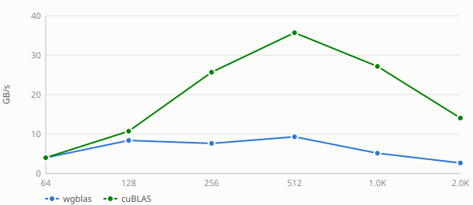
Nvidia Geforce Gtx 1650 — beta = 0
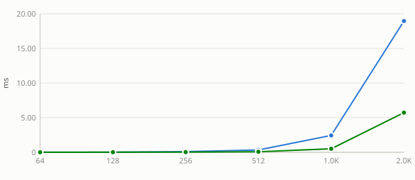
Nvidia Geforce Gtx 1650 — beta = 1
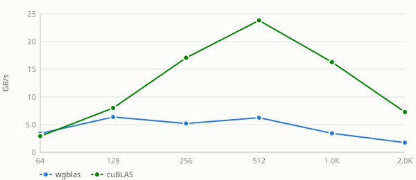
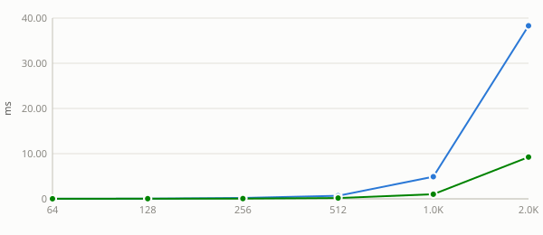
Nvidia Geforce Gtx 1650 — beta = 2.5
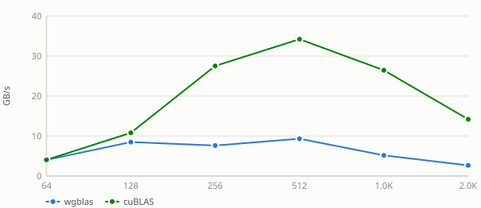
See also:
layout sweep
Column-major swaps the effective
m/nand flips the transpose flag internally, changing which axis is contiguous and therefore how the matrix reads coalesce. wgblas-only: cuBLAS is column-major and has no layout argument, so there is no reference curve to compare against.Nvidia Geforce Gtx 1650 — layout = column-major
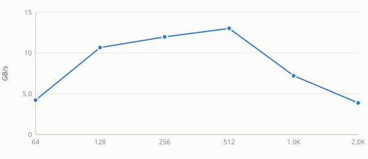
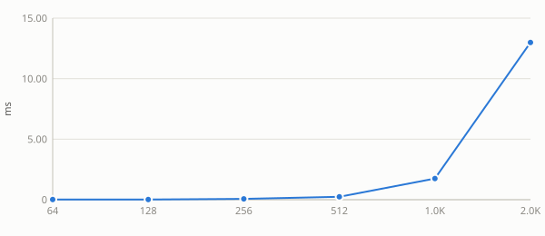
Nvidia Geforce Gtx 1650 — layout = row-major
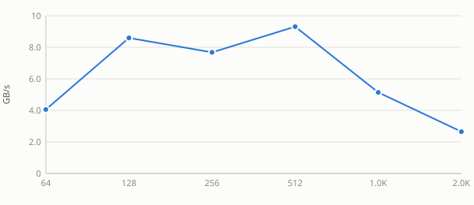
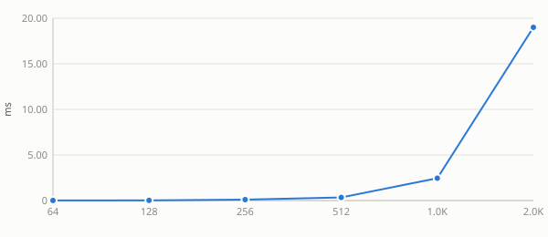
See also:
ldc sweep
Padding on the output matrix.
Cis written rather than streamed, so this measures write coalescing rather than read bandwidth — the row byte-stride isldc*4, and a pad that moves it off the 128-byte boundary is what would show up here.Nvidia Geforce Gtx 1650 — ldc = n + 0
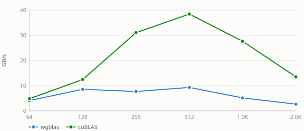
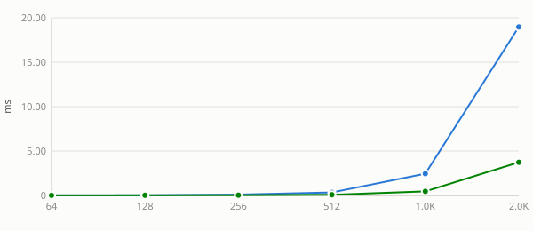
Nvidia Geforce Gtx 1650 — ldc = n + 1
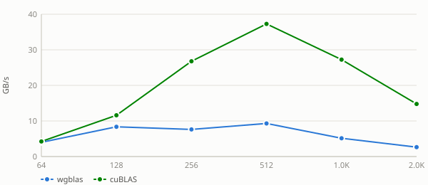
Nvidia Geforce Gtx 1650 — ldc = n + 8
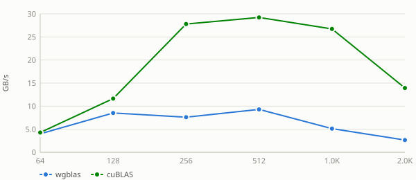
Nvidia Geforce Gtx 1650 — ldc = n + 16
Nvidia Geforce Gtx 1650 — ldc = n + 32
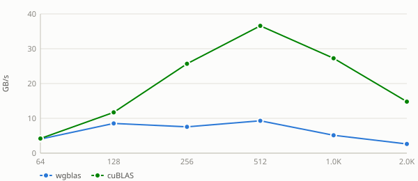
Nvidia Geforce Gtx 1650 — ldc = n + 48
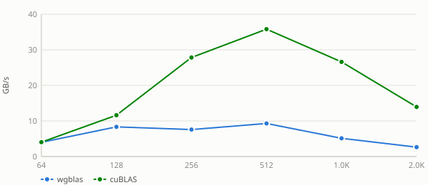
Nvidia Geforce Gtx 1650 — ldc = n + 64
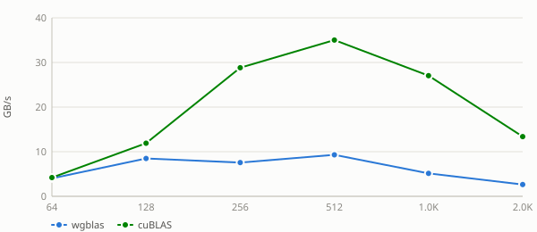
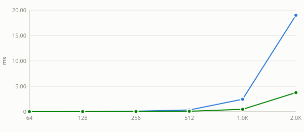
Nvidia Geforce Gtx 1650 — ldc = n + 128
See also: